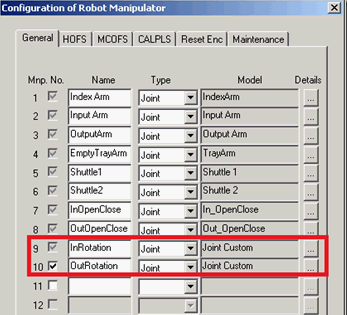
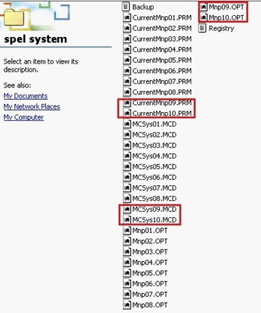

Service History
Subject: NS-8080 Rotator stages installation
Handler Model: NS-8080 (S/N: 182238)
Controller: RC520 HMI P11.510SAS
Date: 4~6 Nov 2012
Symptom
ASE NS-8080 onsite rotator stages installation.
Action
Background: 4~6 Nov Daryl followed rotator stages installation procedures given by Ogata.
This rotation stages are old one that was removed from previous loan NS-8080 at Xilinx.
Handler HOME correctly after pressed HOME.
But found out that even after finished teaching the mcal position using AutoTeach for Rotator, the rotator during running will rotate 270deg even setting to CW or CCW during running.
Additional information was installed the rotator hardware, electrical wiring and enable “exist” for rotator option in HMI config(by re-install HMI CD)
The handler still unable to recognize rotator and prompt “Uni-wire disconnection error” during handler homing.
It was found out that need to check(tick) both robot 9 and 10 in SPEL robot manipulator.
At another NS-8080 S/N: 182241 that was factory installed with rotator stages,
- select Robot 9
- execute Go P*+x(20)
- input rotator turn CW about 10 Deg
At NS-8080 S/N: 182238
- select Robot 9
- execute Go P*+x(20)
- input rotator turn CW about 90 Deg, this rotation amount was much more as compared to the other handler
- suspect PG parameters for Robot 9&10 for rotator has problem/incompatiable
Copied CurrentMnp09.PRM, CurrentMnp10.PRM, MCSys09.MCD, MCSys10.MCD from 182241 to 182238 PSPELWORK folder, NG
Copied Mnp09.OPT, Mnp09.OPT
from another NS-8080 into the Backup SPEL SYSTEM folder of NS-8080 S/N: 182241 and using SPEL to do SYSTEM Restore back to 182238.
Rotators able to rotates correctly.


Handler Input & Output Hand Height calibration was carried out.
Ambient jamrate 1/5000 was carried out, ok.
Cause
HMI Manipulator Configuration was not updated, so it did not update to SPEL.
Copied Mnp09.OPT, Mnp09.OPT from another NS-8080 into the Backup SPEL SYSTEM folder of NS-8080 S/N: 182241 and using SPEL to do SYSTEM Restore back to 182238.
Rotators able to rotates correctly.
Advice by Ogata-san by email on 11 Dec 2012:
1. Install HMI, at the “Handler Configuration” Windows.
2. Select Rotator Stage Exists
3. Click [Manipulator Configuration] then press Update.
4. Click [Generate] and close “Handler Configuration” window.